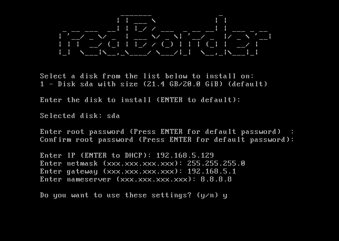

Prev
User Guide
Next
2.2. Advanced Configuration

Figure 2: Basic Configuration
If you wish, you can enter each of the required parameters manually (as shown in the image).
IP Address:
client proxy IP address
Netmask:
client proxy Netmask
Gateway:
client proxy Gateway
Nameserver:
client proxy DNS
Prev
Chapter 2. Redborder Flowgate Internal Configurat...
Up
Home
Next
Chapter 3. Redborder Flowgate Registration and Ex...